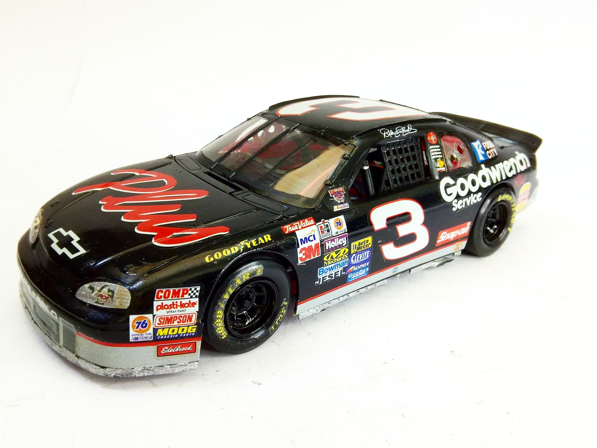
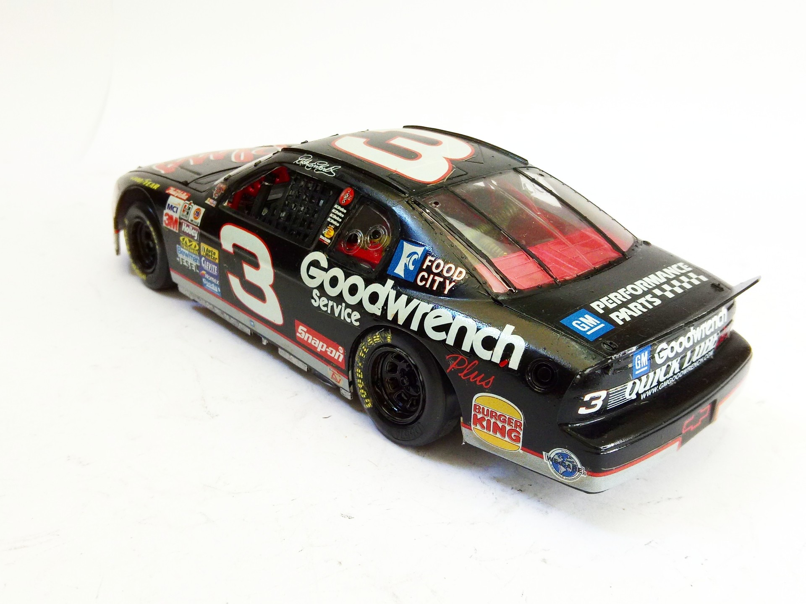
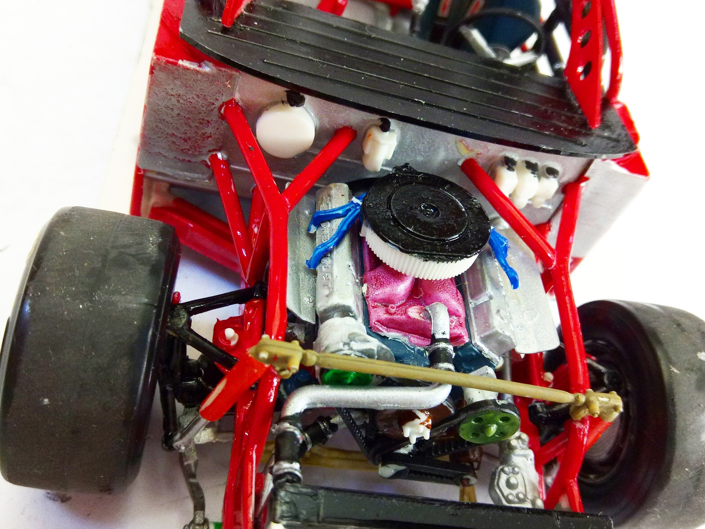
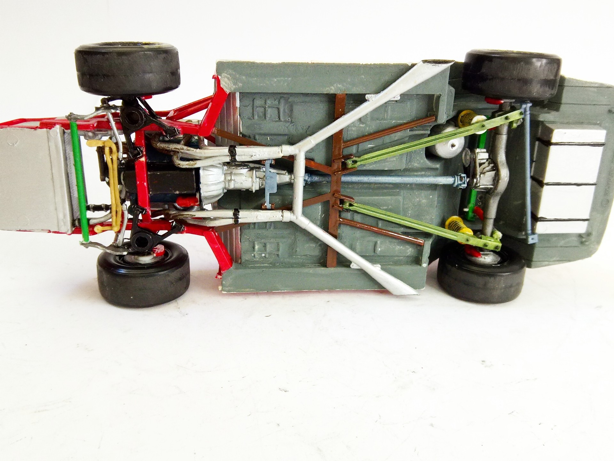
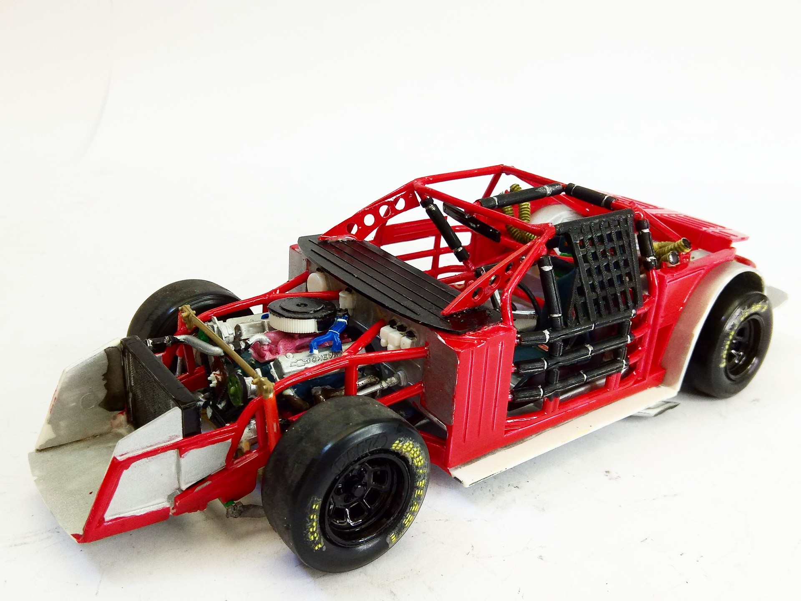

Auto e veicoli stradali · scale model archive
Chevrolet Monte Carlo
Chevrolet Monte Carlo — Kit: Revell, Scale: 1724. NASCAR 1998 championship, Goodwrench - driver:Dale Earnhardt Nice kit with intricate inner detail #1/24…

Photo gallery




English description
NASCAR 1998 championship, Goodwrench - driver:Dale Earnhardt
Nice kit with intricate inner detail
#1/24 #Revell
Descrizione italiana
NASCAR 1998 championship, Goodwrench - pilota:Dale Earnhardt.
Bel kit con intricate inner detail.